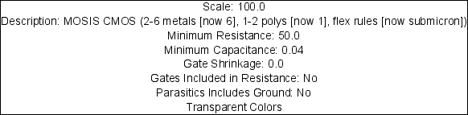
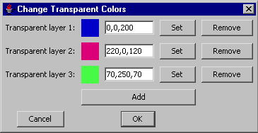

The Support Cell
Each cell in a technology library describes a different aspect of the technology.
The support cell contains technology-wide information.
To see this, edit the cell "factors" under the "TECHNOLOGY SUPPORT" section
of the cell explorer.

The support cell contains many items, any of which can be changed by double-clicking on it.
- "Scale" is the scaling factor between grid units and nanometers.
- "Description" is the full description of the technology.
- "Minimum Resistance" is the minimum resistance for the technology
(see Section 9-10-1 for this and other parasitics).
- "Minimum Capacitance" is the minimum capacitance for the technology.
- "Gate Shrinkage" is the gate shrinkage for the technology.
- "Gates Included in Resistance" tells whether to include a transistor's gate in resistance computations.
- "Parasitics Includes Ground" tells whether to include ground networks in parasitics computations.
Transparent Colors
|
Double-clicking on the "Transparent Colors" entry shows a dialog for selecting the transparent colors.
You must define as many colors as you have used in the layers.
|  |
Design Rules
Unfortunately, it is not possible to edit design rules associated with the technology.